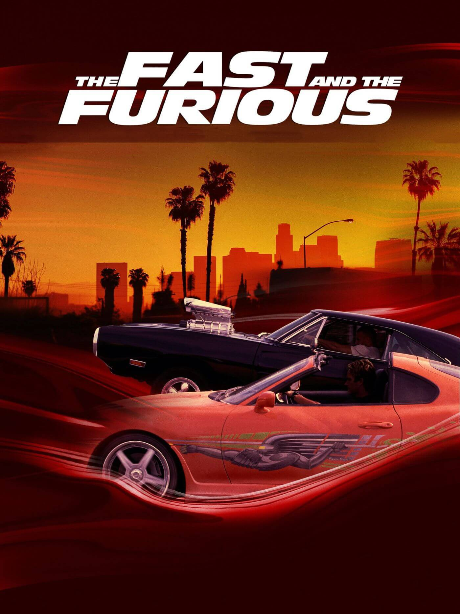

Fast & Furious, also known as The Fast and the Furious, is an American action media franchise centered on a series of films revolving around street racing, heists, and spies.
Prouction
Casting
In 2000, actor Paul Walker had worked with director Rob Cohen on The Skulls. Cohen secured a deal with producer Neal H. Moritz for an untitled action film for Universal Pictures, and approached Walker and asked him to suggest his "dream" action film; Walker suggested a mash-up of the films Days of Thunder (1990) and Donnie Brasco (1997). Soon thereafter, Cohen and Moritz brought him the Vibe magazine article "Racer X" by Ken Li, published in May 1998, which detailed underground street racing operating in New York City, and suggested a story set to follow Walker as an undercover cop tasked with infiltrating the world of underground street racing in Los Angeles inspired by the article. Upon hearing this, Walker signed on immediately; finding his co-star proved difficult. The studio warmed toward the idea of Timothy Olyphant in the role of Dominic Toretto, due to the success of the blockbuster Gone in 60 Seconds (2000), but he declined. Moritz persisted on Vin Diesel following his performance in Pitch Black (2000), with Diesel accepting after proposing several script changes. Moritz had difficulty choosing between the titles Racer X (after the article), Redline, Race Wars and Street Wars, but was ultimately inspired by a documentary on American International Pictures, which included the 1954 film The Fast and the Furious. Moritz was traded use of some stock footage to its director, Roger Corman, in exchange for a license to use the title. Upon release in June 2001, the film shattered box office expectations and a sequel was green-lit.
Diesel declined to return for the sequel, saying that the screenplay was inferior to its predecessor. Cohen also declined the sequel, opting to develop the film XXX (2002), which starred Diesel in the lead role. To account for these changes, Universal commissioned the writers to create a standalone sequel with Walker in the lead and brought in John Singleton as the new director. Filming was delayed by a year and the production location shifted to Miami. Tyrese Gibson, who worked with Singleton on the film Baby Boy (2001), was hired as Walker's new co-star[35] for what was also the first entry in the series to feature long-running cast member Ludacris.
Universal attempted to bring back Diesel for the third installment, but he again declined due to other projects and a dislike for the script.[38] After failing to secure the returns of Walker or any other member of the original cast, Universal ordered a stand-alone film of the franchise. Screenwriter Chris Morgan subsequently attempted to revive the series primarily for car enthusiasts, introducing new characters, focusing on a car-related subculture and moving the series to Tokyo; Japan contains one of the world's largest automotive industries. It is the first film in the series to start its tradition of filming in locations outside the United States. Moritz returned and hired director Justin Lin, having been impressed with Lin's work for the film Better Luck Tomorrow (2002), which shared similar elements with Tokyo Drift. The third film marked the first appearance in the Fast & Furious franchise of Han Lue, portrayed by Sung Kang, a character who originated from Lin's Better Luck Tomorrow. Although the relation between Better Luck Tomorrow and Fast & Furious was originally left unaddressed, both Lin and Kang repeatedly confirmed during the following years that it was the same character, and that Better Luck Tomorrow doubled as Han's origin story, retroactively making the film part of the Fast & Furious continuity. Moreover, with Tokyo Drift, the series was able to bring Diesel in for a cameo appearance, in exchange for letting the actor's production company acquire the rights to the Riddick character. The third film was the least financially successful of the franchise, received lukewarm reception and left the future of the franchise in limbo.
Away from the franchise, Diesel made a string of box office or critical flops, including The Chronicles of Riddick (2004), The Pacifier (2005) and Find Me Guilty (2006), but his cameo in Tokyo Drift generated interest in reviving the series. After signing Diesel and confirming the return of Lin, Universal worked to track the first film's original co-stars and re-signed Walker, Michelle Rodriguez and Jordana Brewster in mid-2008. Walker was initially reluctant to rejoin the franchise after six years, but Diesel assured him that film would be considered the first "true" sequel. Morgan returned to write after the critical praise for the character Han Lue. Given the apparent death of the character in the third film, the timeline of the franchise was altered to account for his appearance.[38] With the emphasis on car culture toned down, the fourth film, Fast & Furious, was a commercial success. Although critical reception was mixed, it reinvigorated the franchise, as well as the star power of Diesel and Walker. Dwayne Johnson joined the cast in Fast Five and headlined the first spin-off film.
In 2011, Fast Five was released. While developing the film, Universal completely departed from any street racing elements prevalent in previous films, to transform the franchise into a heist action series involving cars. By doing so, they hoped to attract wider audiences that might otherwise be put off by a heavy emphasis on cars and car culture. Fast Five is considered the transitional film in the series, featuring only one car race and giving more attention to action set pieces such as gun fights, brawls and the heist. Fast Five was initially conceived to conclude the franchise, but following positive reception at test screenings, alongside its eventual strong critical and commercial performance, Universal proceeded to develop a sixth film.Furthermore, the film is noted for the addition of Dwayne Johnson to the cast, whose performance was critically praised.
In late 2011, the Los Angeles Times reported that Universal was approaching the sixth and seventh installment with a single storyline running through both films, with Morgan envisaging themes of freedom and family, but later shifted to account for the studio's wishes to incorporate elements of espionage. Lin revealed that he had, after discussions with Diesel, storyboarded, previsualized and began editing a twelve-minute finale for Fast & Furious 6, before filming was completed on Fast Five. Upon release, the sixth film became the highest-grossing film in the series, grossing $788 million worldwide.
Universal lacked a major event film for 2014 and rushed the seventh film into pre-production in mid-2013 due to its status as a bankable asset. Lin decided not to return to direct the seventh film, as he was still performing post-production on Fast & Furious 6. James Wan, primarily known for horror films, took over directorial duties. In November 2013, Walker died in a car crash, and the seventh film was delayed to 2015 that December. His brothers Caleb and Cody were hired as stand-ins to recreate Walker's likeness using CGI, reworking his character arc as "retired". Furious 7 (2015) was released to critical and commercial success as the third-highest-grossing film of 2015. Universal unveiled plans for three sequels to Furious 7 in November 2014.
The toll of multiple re-shoots dissuaded Wan from returning to the franchise and Universal hired F. Gary Gray to helm the eighth film, The Fate of the Furious. This film was to begin a new trilogy to conclude the franchise. The film was released in 2017 and received mixed reviews from critics, many of whom praised the performances and action sequences, but criticized the storyline and the long running time. It was an unabashed commercial success, grossing over $1.2 billion worldwide. Universal later announced that final two films will be released in May 2020 and April 2021, with Lin returning to direct. It was announced that Brewster would reprise her role as Mia Toretto, while screenwriter Daniel Casey was hired for the ninth film; F9 is the first film since Tokyo Drift not to be written by Morgan. Pre-production began in February 2019 in London, and filming began in June and concluded in November. John Cena was cast as the film's villain, portraying Jakob Toretto, Dom's brother. Moreover, Sung Kang returned as Han, while the film is the first to star Helen Mirren and saw Lucas Black reprise his role as Sean Boswell from Tokyo Drift. F9 was originally scheduled to be theatrically released on May 22, 2020, but was pushed back a year to April 2, 2021, due to the COVID-19 pandemic.[66] It was then pushed back to May 28, 2021, and finally released in the United States on June 25. It broke pandemic box office records, grossing $726 million worldwide.
Fast X was designed to be the final movie of the franchise which later evolved in becoming a two part finale. Justin Lin was brought back to direct both movies but left the process early on due to on set differences with Vin Diesel.[69] Louis Leterrier was then hired as his replacement to direct the two part finale. At Universal's request, the two part finale was changed to a trilogy.
Films
- The Fast and Furious 2001
- 2 Fast 2 Furious
- The Fast and the Furious: Tokoyo Drift 2006
- Fast & Furious 2009
- Fast Five 2011
- Fast & Furious 6 2013
- Furious 7 2015
- The Fate of teh Furious 2017
- F9 2021
- Fast X 2023
Fast and the Furious (2001)Main article: The Fast and the Furious (2001 film) Brian O'Conner, an LAPD officer, goes undercover in the street racing world to investigate a group of unknown truck hijackers, believed to be led by Dominic Toretto, a professional street racer.
2 Fast 2 Furious (2003) Main article: 2 Fast 2 Furious Brian O'Conner, who is now living in Miami, teams up with Roman Pierce, his estranged childhood friend, to go undercover for the U.S. Customs Service to bring down drug lord Carter Verone in exchange for the erasure of their criminal records. This is the only film in the main series without Vin Diesel as Dominic Toretto.
The Fast and the Furious: Tokyo Drift (2006)Main article: The Fast and the Furious: Tokyo Drift High school car enthusiast Sean Boswell is sent to live in Tokyo with his father in order to avoid time in prison and finds solace in the city's drifting community. Vin Diesel makes a cameo appearance as Dominic Toretto at the end of the film.
Fast & Furious (2009)Main article: Fast & Furious (2009 film) Dominic Toretto and Federal Bureau of Investigation (FBI) agent Brian O'Conner are forced to work together to avenge the murder of Toretto's lover Letty Ortiz and apprehend drug lord Arturo Braga. The film is set five years after the events of The Fast and the Furious, and before Tokyo Drift, with Sung Kang reprising his role as Han Lue from the latter film.
Fast Five (2011) Main article: Fast Five Dom and Brian, along with Dom's sister Mia plan a heist to steal $100 million from corrupt businessman Hernan Reyes while being pursued for arrest by U.S. Diplomatic Security Service (DSS) agent Luke Hobbs. The film is also set before the events of Tokyo Drift. Despite not appearing in the film, a picture of Michelle Rodriguez as Letty Ortiz is seen in the mid-credits scene, where Eva Mendes reprises her role as Monica Fuentes from 2 Fast 2 Furious.
Fast & Furious 6 (2013)Main article: Fast & Furious 6 Dominic Toretto, Brian O'Conner and their team are offered amnesty for their crimes by Luke Hobbs, in exchange for helping him take down a skilled mercenary organization led by Owen Shaw, one member of which is Toretto's former lover Letty Ortiz. The film is the final film to be set before the events of Tokyo Drift. Jason Statham appears as Owen's older brother Deckard Shaw in the credits scene, seemingly killing Han, as seen in Tokyo Drift.
Furious 7 (2015)Main article: Furious 7 Dominic Toretto, Brian O'Conner, and their team are recruited by covert ops leader Mr. Nobody to prevent terrorist Mose Jakande from obtaining a hacking program known as God's Eye. The film is set after the events of Fast & Furious 6 and continues from the ending of Tokyo Drift, with Lucas Black reprising his role as Sean Boswell. It also marks the final appearance of Paul Walker as Brian O'Conner, due to his death in 2013.
The Fate of the Furious (2017) Main article: The Fate of the Furious Cyberterrorist Cipher coerces Dominic Toretto into working for her and turns him against his team, forcing them to take down Cipher and reunite with him. This is the first film since Tokyo Drift to not feature Paul Walker as Brian O'Conner and Jordana Brewster as Mia Toretto.
F9 (2021) Main article: F9 (film) Dominic Toretto and his family must stop a world-shattering plot headed by Cipher and Dominic's estranged younger brother Jakob. The film is set two years after the events of The Fate of the Furious. This is the first film since Fast & Furious not to feature Dwayne Johnson as Luke Hobbs. Jason Statham appears as Deckard Shaw in the mid-credits scene, while Jordana Brewster returns to the franchise in her role of Mia Toretto, along with Sung Kang as Han Lue, who is revealed to be alive, and Lucas Black as Sean Boswell. Shad Moss and Jason Tobin reprise their roles as Twinkie and Earl, respectively, from Tokyo Drift.
Fast X (2023) Main article: Fast X Dominic Toretto must protect his family from Dante Reyes, who pursues revenge for his father's death and the loss of their fortune. The film is set two years after the events of F9 and ten years after Fast Five.[3] Dwayne Johnson returns to the main franchise as Luke Hobbs in the mid-credits scene, while Gal Gadot reprises her role as Gisele Yashar, who is revealed to have survived the events of Fast & Furious 6, in the ending scene.
X: Part 2 (2027) On April 19, 2023, Louis Leterrier was announced as the director of an untitled sequel to Fast X and Hobbs & Reyes,[4] while Christina Hodson and Oren Uziel were announced as screenwriters five days later.[5] Later that month at CinemaCon, Vin Diesel revealed the eleventh film would be released in 2025.The project was put on hold due to the 2023 Writers Guild of America and SAG-AFTRA strikes. While Fast X led the development of the eleventh film, its budget and modest box office performance meant that the project's continuation would serve as a finale. It was reported that an eleventh film could be "a throwback to the original film", and consist of a single mission and a different antagonist instead of Dante. In February 2024, Diesel confirmed that the eleventh film would be the final installment.[10] In May 2024, Leterrier announced that the film was delayed to 2026.[11] The next month, it was announced that Zach Dean replaced Hodson and Uziel as the writer. In November 2024, it was announced that the film would be released in March 2026. In June 2025, Diesel announced the film would now release in April 2027, claiming the film will go back to the roots of the franchise, while also saying that Brian O'Conner was due to return.
Fast & Furious Presents: Hobbs & Reyes (TBA) In November 2019, producer Hiram Garcia confirmed that all creatives involved have intentions in developing a sequel to Hobbs & Shaw, with conversations regarding the project ongoing.[15] By March 2020, Dwayne Johnson confirmed that a sequel was officially in development, while the creative team was not yet decided.[16] Garcia confirmed the project was in active development a month later, citing the box office performance of Hobbs & Shaw, and announced Chris Morgan would return to write.[17][18] Johnson expressed excitement for the sequel that same month, stating that it will introduce new characters.[19] In November 2021, Johnson revealed that he had developed an original idea for the sequel, which he described as "the antithesis of Fast & Furious" and that he presented the concept to Universal Pictures chairwoman Donna Langley, as well as Garcia and Morgan. He elaborated the sequel would take immediate precedence over the rest of his film-slate, and further teased its development would progress after he completed the holiday-action film Red One (2024).[20] Later that month, Garcia confirmed that work on the screenplay is ongoing, calling the film "very ambitious".[21] In December 2022, Universal Pictures producer Kelly McCormick stated the film's production has been stalled.[22] In June 2023, Johnson announced plans for a direct Hobbs & Shaw sequel were postponed, and that a standalone sequel serving as a direct continuation to Fast X (2023) that would bridge into the eleventh main film was in development.[23] The film's title, Hobbs & Reyes, was then announced, with Johnson and Jason Momoa set to star.[24] Morgan was set to return to write the film, with Garcia, Johnson, Dany Garcia, Vin Diesel, Samantha Vincent, Jeff Kirschenbaum, and Neal H. Moritz set to produce.
Other Franchise Content
Spin-offs In 2015, Diesel announced that potential spin-offs were in the early stages of development. In 2019, Diesel announced a film that will focus on the women characters from the Fast & Furious and mentioned that there are three spin-off films in development. Nicole Perlman, Lindsey Anderson Beer and Geneva Robertson-Dworet will serve as co-screenwriters on the project. The first spin-off, Fast & Furious Presents: Hobbs & Shaw, was announced in 2018 and starred Johnson and Jason Statham. In late 2017, Variety reported Morgan had written the script, while David Leitch would direct. Originally, the ninth film in the main series was supposed to be released in April 2019, followed by the tenth in April 2021. Instead, Universal opted to proceed with the spin-off, to occupy the 2019 release date. This caused tensions between Johnson, Diesel and Gibson,[76] with Gibson responding through an Instagram post, criticizing Johnson for causing the ninth film to be delayed.[73] Johnson called out his male co-stars after completing The Fate of the Furious in a now deleted Instagram post saying, "My male co-stars however are a different story. Some conduct themselves as stand up men and true professionals, while others don't. The ones that don't are too chicken shit to do anything about it anyway. Candy asses. When you watch this movie next April and it seems like I'm not acting in some of these scenes and my blood is legit boiling—you're right."[77] Johnson later cited scheduling issues as his refusal to participate in F9 and later confirmed he will not be in the final two Fast & Furious films (Fast X and its sequel), despite Vin Diesel asking him to return in an Instagram post, with Johnson calling Diesel's attempt "manipulative".[78] However, Johnson made a cameo appearance at the end of Fast X which indicated his potential involvement in its sequel.[79] In October 2018, long-term producer Neal H. Moritz filed a lawsuit against Universal Pictures for breach of oral contract and committing promissory fraud, after the distributor removed him as lead producer for Hobbs & Shaw. Furthermore, it was revealed in May 2019 that Universal had dropped Moritz from all future Fast & Furious installments.[80] His lawsuit was settled in September 2020,[81] and Moritz would later return to the series with F9. In April 2016, DreamWorks Animation was acquired by NBCUniversal for $3.8 billion, with the acquisition including a first look deal with the company to produce animated projects based on or with films under the Universal Pictures banner.
Television Series In April 2018, streaming service Netflix green-lit the series Fast & Furious Spy Racers, with Bret Haaland, Neal H. Mortiz, Vin Diesel, Tim Hedrick and Chris Morgan as executive producers and Hedrick and Haaland as showrunners. The series premiered on December 26, 2019, and ran for six seasons.
Video Games A video game based on the first movie was planned to be released in November 2003 for the PlayStation 2 and in 2004 for the Xbox, but was cancelled for unknown reasons. It was planned to be developed by Genki and published by Vivendi Universal Games under the Universal Interactive label.[139] The arcade racing game The Fast and the Furious, loosely based on the first installment, was released in 2004 by Raw Thrills.[140] It was designed by Eugene Jarvis, the creator of the Cruis'n series of games, and shares much of the same gameplay. It was ported to the Wii without the Fast & Furious license as Cruis'n in 2007. Three arcade sequels followed, The Fast and the Furious: Drift in 2007, drawing on elements of the third film,[141] Fast & Furious: SuperCars in 2011,[142] and Fast & Furious Arcade in 2022.[143] A 2006 game The Fast and the Furious was released for the PlayStation 2 and PlayStation Portable and drew heavy inspiration from Tokyo Drift. It received mixed reviews and sold moderately. A mobile game also titled The Fast and the Furious was likewise released in 2004, followed by a sequel, 2 Fast 2 Furious, released in the same year exclusively for mobile phones and based on the second film. Several other games have been released for iOS and Android devices, including Fast & Furious, Fast Five, Fast & Furious: Adrenaline, Fast & Furious 6: The Game, Fast & Furious: Legacy and Fast & Furious Takedown. Fast & Furious: Showdown was released in 2013 for Microsoft Windows, Xbox 360, PlayStation 3, Wii U, and Nintendo 3DS. It marked the second game for consoles, and players controls multiple characters; its narrative was designed around the gap between the fifth and sixth film. It was released to negative reviews and middling financial success.[144] Various cars, locations and characters from the franchise appeared in the Facebook game Car Town. In 2015, in a deal with Microsoft Studios, an expansion of Forza Horizon 2 was released for Xbox 360 and Xbox One, titled Forza Horizon 2 Presents: Fast & Furious. It was released to promote Furious 7 and received generally positive reception, although some critics lamented the limited involvement from the titular characters. In 2017, the vehicular soccer game Rocket League released a downloadable content (DLC) pack in promotion for The Fate of the Furious, where players would be able to purchase the Dodge Charger from the film as well as its exclusive wheels and six other new customizations.[146] Fast & Furious Crossroads was announced at The Game Awards 2019. The game was originally scheduled for release in May 2020 but was delayed due to logistical problems caused by the COVID-19 pandemic. It was eventually released for Microsoft Windows, PlayStation 4, and Xbox One on August 7, 2020[148] to largely negative reception.Fast & Furious Spy Racers: Rise of SH1FT3R was released in 2021. The 2023 release Hot Wheels Unleashed 2: Turbocharged features crossover themed vehicles from the franchise,[151] followed by a car pack expansion of the game Forza Horizon 5 released in December 2023, featuring five vehicles from Fast X.
Toys In 2002, RadioShack sold ZipZaps micro radio-controlled car versions of cars from the first film,[153] while diecast metal manufacturer Racing Champions released replicas of cars from the first two installments in different scales from 1/18 to 1/64, in 2004. AMT Ertl rivaled the cars released by Racing Champions by producing 1/24-scale plastic model kits in 2004, while Johnny Lightning, under the JL Full Throttle Brand, released 1/64 and 1/24 models of the cars from Tokyo Drift. These models were designed by renowned diecast designer Eric Tscherne. In 2011, Universal licensed the company Greenlight to sell model cars from all films in anticipation for Fast Five.[155] Since 2013, Hot Wheels has released 1/64 models of every car from and since the sixth installment.[156] In 2020, LEGO produced a set in their Technic line of Dom's Dodge Charger. In June 2022, The Lego Group unveiled Dominic Toretto's 1970 Dodge Charger R/T which was released as part of the Lego Speed Champions theme on August 1, 2022. It consists of 345 pieces, and includes a Dominic Toretto minifigure. On January 1, 2023, the LEGO Group released Brian O'Conner's Nissan Skyline GT-R, also as part of the Speed Champions theme. It consists of 319 pieces, and includes a Brian O'Conner minifigure.
Fast & Furious: Reality
The series, particularly the first few films, helped popularize the import scene and car tuning.[169] According to the LA Times, there are some Los Angeles Police Department (LAPD) officers who blame the Fast & Furious films for popularizing street racing in the city. In August 2022, residents of Los Angeles held a protest against the filming of Fast X, claiming the movies promote illegal street racing. The franchise has been credited with increasing onscreen diversity, and has had broad appeal across multiple demographics. Furious 7 was one of the few American blockbusters which had a majority non-White viewership: 37 percent of its audience was reportedly Latino; 25 percent White; 24 percent Black; and 10 percent was Asian. In a 2011 article about the series's casting, Wesley Morris wrote: Movies about race still tend to be self-congratulatory or mine tension for comedy ... The Fast and Furious movies, by contrast, are free of this angst. They're basically a prolonged party for a ring of street-racing urban car thieves.